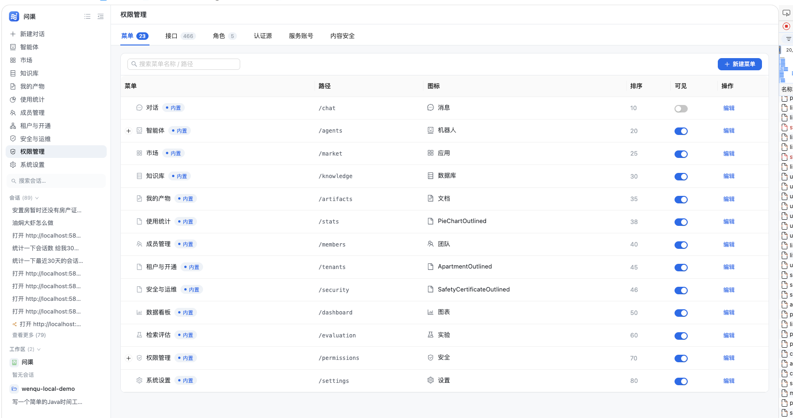

一页结论
权限页的核心矛盾不是「表格不好看」，而是信息只以「管理对象」组织，没有以「角色」组织： 菜单表、接口表、角色表各自完整，但管理员要在三者之间来回跳，才能回答一个授权问题。
PermissionsPage.vue 与 4 个新组件，回归风险低；方向 B 作为下一阶段，复用 A 的全部组件。
| 管理员问题 | 现状怎么回答 | 升级后怎么回答 |
|---|---|---|
| 谁能进什么？ | 逐个角色开抽屉看，或手输 uid 查有效权限 | 角色行直接看「菜单 / 允许 / 禁止 / 成员」，点开即下钻 |
| 哪些角色是空壳？ | 只能看到成员数 0，但不知道权限数也为 0 | 概览条「待处理」+ 角色行 warn 标记 + 一键筛选 |
| 哪些接口没人管？ | 466 行平铺，只能搜索路径 | 接口页左侧「未授权 / 未挂菜单」筛选 + 模块计数 |
| 这次改动会影响谁？ | 保存前没有差异摘要，菜单隐藏只靠弹窗 | 抽屉保存条显示「N 项未保存」；菜单行显示可见角色 |
现状诊断：能用，但不够好用
以下判断都来自当前工作树代码与截图，不是体感评价。问题按「影响管理员决策」的严重度排序。

只按「管理对象」组织，没有角色视角
菜单、接口、角色三张表各自完整，但「一个角色到底能做什么」只能开抽屉逐个看。角色表的成员数、权限数、数据范围没有聚合，管理员无法一眼巡检。
466 行接口一次性平铺
无分页、无模块导航、无「未授权 / 未挂菜单」筛选，也没有批量归属菜单。找一个接口只能靠搜索路径，更无法回答「哪些接口没人管」。
110 个授权点全是裸编码
manual:sync、chat:tool-output 直接进入界面；分组按 Controller 类名，中英混杂。管理员看不懂，就只能凭记忆勾选。
加载失败仍可保存，可能清空权限
抽屉先打开再拉数据，失败只 toast；勾选为空但「保存权限」仍可点，而保存是全量替换。网络抖动就可能把角色权限清空。
deny 用行尾文字按钮表达
「排除 / 只压本角色」没有三态（允许 / 禁止 / 未置），允许与禁止的互斥关系靠提示文字解释；管理员很难确认自己到底配了什么。
并入的三个 Tab 各写一套壳
认证源、服务账号、内容安全的页头（head-count / sr-only）、操作列（a-button type=link / app-link-btn）、空态都不一致，像三个不同产品拼在一起。
问题与代码证据
| 编号 | 问题 | 证据 | 优先级 |
|---|---|---|---|
| S1 | 页头无概览，页签只给计数 | PermissionsPage.vue:2-24 | P2 |
| S3 | 接口 466 行无分页 / 无模块导航 | PermissionsPage.vue:108-163 | P1 |
| S4 | 反查失败显示成「未授权给任何角色」 | PermissionsPage.vue:129-140；检查清单 R-09 | P1 |
| S5 | 角色无权限数 / 最近变更，成员数不可点 | PermissionsPage.vue:166-221 | P1 |
| S6 | 菜单「图标」列冗余，排序只读，无可见角色反查 | PermissionsPage.vue:50-101 | P2 |
| S7 | 授权点裸编码、Controller 分组 | PermissionsPage.vue:880-913；ApiEndpointScanner.java:446-448 | P1 |
| S8 | deny 无三态，语义靠文字 | PermissionsPage.vue:405-430 | P2 |
| S9 | 加载失败仍可保存，存在清空风险 | PermissionsPage.vue:970-1015；检查清单 R-09 | P1 |
| S10 | 有效权限需手输 uid，不显示 globalDenies | PermissionsPage.vue:313-335 | P2 |
| S11 | 三个并入 Tab 的壳不一致 | ServiceAccountsPage.vue:1-12 等 | P3 |
设计目标与原则
不引入新的视觉语言，只把现有信息重新组织，并把「配置」从表单升级为可核对的视图。
先给结论
进入页面先看到角色、授权点、接口、菜单的规模与异常，再进入表格。
问题都能下钻
谁能进、谁是空壳、谁没人管、改动影响谁，每个数字都能点进对应清单。
凭记忆勾选
授权点用「业务域 + 中文名 + code」展示，三态互斥，配置结果可核对。
概览条只放能驱动决策的指标；不放装饰性图表。
成员数、授权点数、可见角色数、未授权接口数都给出入口，避免「看到数字却不知道是谁」。
业务域分组、中文名双段、三态控件；不再让编码和「排除」按钮承担语义。
脏状态、离开确认、加载失败禁用保存、保存摘要，一个都不能少。
只使用 app.css 的变量与通用类，深色主题零额外适配。
A 与 B 共享概览条、三态编辑器、成员抽屉与有效权限弹窗，便于切换与回退。
信息架构：两套方向
两套方向解决同一批问题，但组织方式不同：A 以「管理对象」为主轴，B 以「角色」为主轴。 下面先看结构，再看 §05 / §06 的真实界面效果图。
渐进增强
推荐 · 低风险表格 + 成员抽屉 + 配置器
模块导航 + 分页 + 批量
角色中心工作台
改动大 · 路径短角色卡片列表
搜索 · 状态筛选
角色头部 + 分段
权限 / 成员 / 范围 / 变更
?tab= 深链需重定向。| 维度 | 方向 A · 渐进增强 | 方向 B · 角色中心 |
|---|---|---|
| 学习成本 | 低：仍是三个熟悉页签，只是多了概览与下钻 | 中：需要理解「左角色右详情」的新导航 |
| 首屏信息密度 | 高：概览 + 当前对象列表 | 高：角色列表 + 选中角色摘要 |
| 多角色对比 | 强：一张表横向对比 5 个角色 | 弱：一次只看一个角色，靠左栏切换 |
| 权限配置步数 | 3 步：角色页签 → 找角色 → 开抽屉 | 1 步：左栏点角色，右栏直接配 |
| 菜单 / 接口管理 | 强：仍是一级页签 | 中：降为二级导航，多一次点击 |
| 改动文件数 | 约 2 个页面 + 4 个组件 + 2 个后端接口 | 约 3 个页面 + 6 个组件 + 2 个后端接口 |
| 回归风险 | 低：现有 URL 与懒加载不变 | 中：主页面重写，需处理旧深链重定向 |
| 推荐场景 | 本期上线、要求低风险 | 管理员日常按角色巡检、后续持续投入 |
效果图 · 方向 A 渐进增强
保留现有三页签骨架，在列表之上加概览条，在行内加下钻，在权限抽屉里加三态与脏状态。
以下 4 张图按真实应用 1120px 内容宽度绘制，配色取自 app.css 设计令牌；示例数据仅用于表达结构。
A1 · 角色页签总览（默认落点）
页头右侧常驻「有效权限查询」；概览条先给规模与异常；角色表把成员、授权、数据范围、最近更新放在同一行，所有数字都可下钻。
权限管理
角色 · 菜单 · 接口 · 接入治理superadmin内置管理员级admin内置管理员级editorauditor空角色guestA2 · 角色权限配置抽屉 2.0
抽屉从「两棵勾选树」升级为「可见菜单 + 按业务域分组的授权点三态」；加载失败禁用保存，脏状态有计数与撤销。
权限管理
角色 · 菜单 · 接口 · 接入治理editorcode 前缀聚合（对话、知识库、手册…），组头显示 已授予/总数 与禁止数，支持组级全选。chat:use；搜索两者都能命中。A3 · 接口页签：从 466 行平铺到可巡检
左侧模块导航承担「按域找接口」，顶部状态筛选回答「哪些没人管」，批量条承担「一次归属多个接口」。
权限管理
角色 · 菜单 · 接口 · 接入治理/api/ai/menu/listmenu:read/api/ai/rolerole:manage/api/ai/chat/streamchat:use/api/ai/kb/{id}kb:write/api/ai/tenant/{id}tenant:manage/api/ai/ops/checkupops:read/api/ai/service-accountservice-account:manage/api/ai/stats/usagestats:read+N。PUT /api/{id} 更新所属菜单，失败项单独回报。A4 · 菜单页签：反查可见角色 + 拖拽排序
菜单不再只是「给自己看的清单」：每一行直接显示哪些角色能看到它，排序从数字输入改成拖拽，图标列删除。
权限管理
角色 · 菜单 · 接口 · 接入治理效果图 · 方向 B 角色中心
方向 B 把「角色」变成主页面的第一等公民：左栏选角色，右栏直接看权限、成员、数据范围与变更记录。 与 A 共用同一套三态配置器、概览条与有效权限弹窗，差异只体现在信息架构。
B1 · 角色中心工作台（默认视图）
左栏是角色的「卡片清单」，右栏是选中角色的摘要与四个分段；管理员日常巡检不再需要先切页签、再找角色。
权限管理
按角色巡检 · 菜单 / 接口在二级导航平台管理员
admin
内置
管理员级
启用
chat:usechat:tool-outputuser:readuser:write?tab= 深链做重定向。B2 · 右栏权限配置：左菜单 / 右授权点
方向 B 的配置区不被抽屉高度限制，可以把「可见菜单」与「功能授权点」并排放；这是它相对 A 最直接的操作收益。
权限管理
按角色巡检 · 菜单 / 接口在二级导航内容编辑
editor
启用
chat:usechat:historychat:tool-outputknowledge:readkb:writemanual:syncB3 · 成员 / 数据范围 / 变更记录
成员不再是权限页之外的事：角色详情内直接列出成员、来源与有效权限入口；数据范围与最近变更同屏可见。
权限管理
按角色巡检 · 菜单 / 接口在二级导航内容编辑
editor启用
wang.lichen.yuyang.fanli.ming效果图 · 接入与治理三个 Tab 统一
认证源、服务账号、内容安全目前各写一套页头与操作列。统一后只保留一种壳： 标题 + 计数 + 说明 + 主操作；工具栏；卡片内表格；统一的操作链接与空/错态。下面以认证源为例。
C1 · 认证源列表（统一壳）
页头不再用 sr-only 标题 + 孤立计数；工具栏与操作列与权限主页面使用同一套通用类。
认证源与身份同步
共 2 个 SAML / SCIM / LDAP 统一登记；组映射决定 IdP 组自动授予的角色corp-wxhq-ldap.app-link-btn、空/错态带重试。sr-only）+ 计数 + 说明 + 主操作右对齐，三个 Tab 一致。.app-list-bar.in-card。.app-link-btn，危险操作用 .danger，不再混用 antd 链接按钮。组件与交互规格
下面这些规格是效果图与实现之间的契约：组件边界、状态机、异常态与键盘行为都写死，避免实现时再发挥。
C1概览指标条
5 个指标卡：角色、授权点、接口、菜单、待处理。数字来自 GET /role/overview；失败时显示「—」并保留列表可用。
- 异常项用 warn 色，零值弱化；不放装饰性图表。
- 点击卡片切到对应页签并预置筛选（如接口 → 未授权）。
C2三态授权控件
每行授权点右侧是互斥的 允许 | 禁止 | 未置 分段控件；选「禁止」时出现「仅本角色内生效」开关（exempt）。
- 同一授权点不会同时产生 allow 与 deny；服务端仍保留冲突报错兜底。
- 组头操作：全选允许 / 全部禁止 / 清空；只影响当前业务域。
- 键盘：Tab 进入分段，←/→ 切换，Space 选中。
C3脏状态与保存
编辑器顶部记录初始快照，任一勾选/三态变化后进入 dirty；底部常驻「N 项未保存」与撤销。
- 关闭抽屉、切换角色、离开页面都弹确认。
- 加载失败时保存禁用，显示错误横幅与「重试」。
- 保存成功提示带摘要：
已保存：菜单 12 · 允许 34 · 禁止 2。
C4成员抽屉 / 成员分段
只读列：账号、昵称、授予来源（手动 / 认证源）、状态；每行「有效权限」入口。
- 认证源授予的行只读，并标注「在认证源组映射中调整」。
- 空态「该角色还没有成员」+「去成员管理」。
- 数据源复用
GET /role/{code}/members。
C5有效权限视图
账号可从成员选择，也可手输 uid；结果按业务域分组，标注来源角色与 globalDenies。
- 管理员级显示「管理员级：全部动作」横幅。
- 被禁止的点单独红色分组，不混在允许项里。
- 支持复制清单与导出 JSON。
C6接口页分页与批量
默认 50 条/页；左侧模块导航与状态筛选联动；勾选后浮出批量条。
- 批量归属逐条调用
PUT /api/{id}，失败项汇总提示。 - 反查失败显示「取数失败 · 重试」，不显示「未授权」。
- 搜索匹配路径、名称、授权点中文名与编码。
C7「只读管理员」一键模板
配置器顶部提供「套用『只读管理员』模板」。只读 / 写类判据来自目录接口的 readonly 字段
（该授权点名下端点是否全为 GET/ALL，或 self:*），与后端 RbacSeedRunner
建预设角色的口径同源。
- 普通角色：允许全部只读授权点，写类保持未授予；可见菜单设为全部。
- 管理员级角色：默认全允许，模板把写类授权点逐条设为「禁止（压过全员）」，即「能看不能改」。
- 套用只改草稿，仍需点「保存权限」；「撤销」可一键回到套用前。
/security?tab=audit&keyword=角色编码&days=30，审计页读取 keyword / days / actor / action
作为初始筛选，与角色详情里的「近 30 天」口径一致。
状态矩阵
| 场景 | 界面表现 | 可操作 |
|---|---|---|
| 首次加载 | 表格骨架 + 概览条「—」 | 无 |
| 无数据 | 「暂无菜单 / 角色 / 接口」+ 主操作按钮 | 新建 / 登记 |
| 无筛选结果 | 「没有匹配结果」+ 清除筛选 | 清除筛选 |
| 加载失败 | 错误横幅「取数失败」+ 重试 | 重试；保存禁用 |
| 无权限 | 沿用现有路由拦截，不进入页面 | 返回对话 |
| 保存冲突 | 提示冲突授权点编码，保留弹窗与改动 | 修正后重试 |
:focus-visible 焦点环；
所有图标按钮补 aria-label；开关与三态控件提供 aria-checked / aria-pressed；
拖拽排序提供弹窗内的数字输入作为键盘替代。
数据与接口
后端只补 3 个只读能力，全部不参与鉴权判定、不改表结构；写路径仍然是现有
PUT /role/{code}/permissions。
| 能力 | 接口 / 位置 | 返回 | 用途 |
|---|---|---|---|
| 概览统计 | GET /api/ai/role/overview | {summary, roles[]} | 概览条 + 角色表的成员/菜单/授权计数 |
| 菜单→角色反查 | GET /api/ai/role/menu-roles | {menuId: [roleCode]} | 菜单页「可见角色」列 |
| 授权点中文名 | ApiEndpointScanner + 目录回填 | permission-catalog.name | 配置器与接口页的中文主标题 |
| 只读标记 | GET /api/ai/role/permission-catalog | readonly: 0|1 | 「只读管理员」一键模板的判据 |
GET /api/ai/role/overview (role:read)
{
"summary": {
"roles": 5, "activeRoles": 4, "adminRoles": 2, "rolesWithoutMembers": 1,
"menus": 32, "hiddenMenus": 3,
"apis": 466, "apisWithoutPermission": 12, "apisWithoutMenu": 8,
"permissions": 109, "expiringGrants": 0
},
"roles": [
{ "code": "admin", "memberCount": 3, "menuCount": 28,
"permissionCount": 96, "denyCount": 2, "lastUpdated": "2026-11-06T18:20:00" }
]
}
GET /api/ai/role/menu-roles (role:read)
{
"menu-chat": ["admin", "editor", "user"],
"menu-knowledge": ["admin", "editor"],
"menu-settings": ["admin"]
}
中文名回填规则：只在目录行的 name == code 时更新为中文名，不覆盖管理员手工命名。
前端始终以 code 作为唯一键，展示层优先取 name，缺失时回落编码。
复用的现有接口
| 接口 | 用在哪 | 备注 |
|---|---|---|
GET /role/{code}/members | 成员抽屉 / B3 成员分段 | 已有，无需改动 |
GET /role/{code}/permissions | 配置器回显 | 含 menuIds / permissions / denies |
PUT /role/{code}/permissions | 唯一写路径 | 菜单 + 允许 + deny 一次事务提交 |
GET /role/permission-catalog | 授权点目录 | 分组改由前端按 code 前缀聚合 |
GET /role/permission-roles | 接口页「已授权角色」 | 反查失败要显示错误态 |
GET /role/expiring?days=7 | 概览「待处理」 | 已有，权限页复用 |
GET /role/effective/{uid} | 有效权限视图 | 含 globalDenies |
GET /audit?... | B3 变更记录 | 按角色 code 作为 keyword |
@Permission 注解、不改 RoleService 判定核、不做菜单租户化、不做行级 ABAC、
不引入权限申请审批流。这些属于 RBAC 后续批次，不在本次 UI 升级范围内。
实施计划
阶段 0 只产出本文件，等方向确认后再进入代码；阶段 1 起才动源码。
产出本 HTML；复制现状截图；自检无横向溢出、锚点可用。不写业务代码。
RoleController 加 overview / menu-roles；RoleMenuMapper 加全量绑定查询；ApiEndpointScanner 补 109 个中文名与回填。
api.js 加 2 个方法；新建 utils/permissions.js 与 4 个组件（概览条、三态、配置器、成员抽屉、有效权限）。
A：改造 PermissionsPage.vue 四块；B：新建角色工作台并做旧 ?tab= 重定向。
认证源 / 服务账号 / 内容安全统一页头、工具栏、操作列、空/错态；不改业务字段。
npm run build、后端编译、浏览器逐项验收、深色主题与四档宽度检查。
改动文件清单（预估）
| 层 | 文件 | 改动 |
|---|---|---|
| 后端 | controller/RoleController.java | +2 个 GET |
| 后端 | service/RoleService.java | +overview / rolesByMenu |
| 后端 | mapper/RoleMenuMapper.java | +全量绑定查询 |
| 后端 | mapper/PermissionCatalogMapper.java | +条件回填 name |
| 后端 | startup/ApiEndpointScanner.java | +PERMISSION_ZH / 回填 |
| 前端 | views/PermissionsPage.vue | 主页面改造 / 或降为壳 |
| 前端 | api.js | +getRoleOverview / getMenuRoles |
| 前端 | utils/permissions.js | 业务域分组 / 标签 / 三态 |
| 前端 | components/permissions/* | 概览条 / 三态 / 配置器 / 成员抽屉 / 有效权限 |
| 前端 | views/IdentityProvidersPage.vue 等 3 个 | 统一壳 |
验收标准
方案书阶段与实现阶段分开验收；下面是实现完成后必须逐条通过的清单。
方案书
功能
GET /role/{code}/members 一致。npm run build 与后端 mvn -DskipTests compile 通过。不回归
?tab=menus|apis|roles 深链仍有效（B 下提供重定向）。/permissions 的拦截行为不变。待确认的 4 个决策
看完效果图后，只需要回这 4 个问题，就可以进入实现。
选方向 A 还是方向 B？
A：保留三页签，风险低，适合本期上线；B：角色中心，配置路径最短，但主页面要重写。
推荐 A 先上线，B 作为下一阶段；两套共用组件授权点中文名是否本期做？
当前 109 个授权点都是裸编码。补中文名是「看得懂」的前提，但需要一次性整理 109 条映射并回填目录。
推荐本期做；否则三态配置器仍然要靠编码辨认菜单拖拽排序是否本期做？
拖拽能明显改善日常整理体验，但需要同父级约束、乐观更新与失败回滚；也可以先保留排序数字输入。
推荐方向 A 本期做；方向 B 可后置审计事件是否并入权限域？
方向 B 的「变更记录」直接复用审计接口；方向 A 可以先在角色行给一个「变更记录」入口，不新增页面。
推荐并入；不新增后端接口